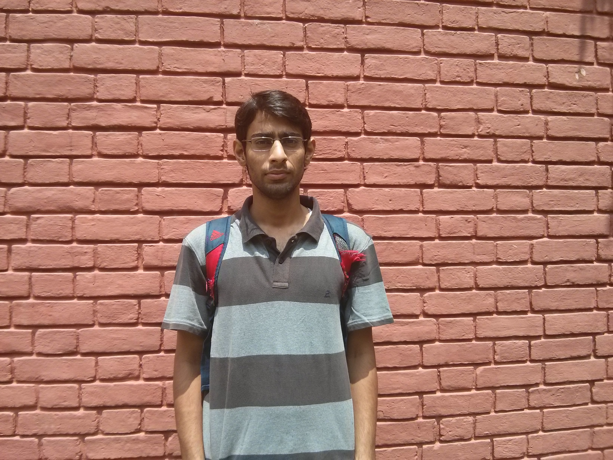
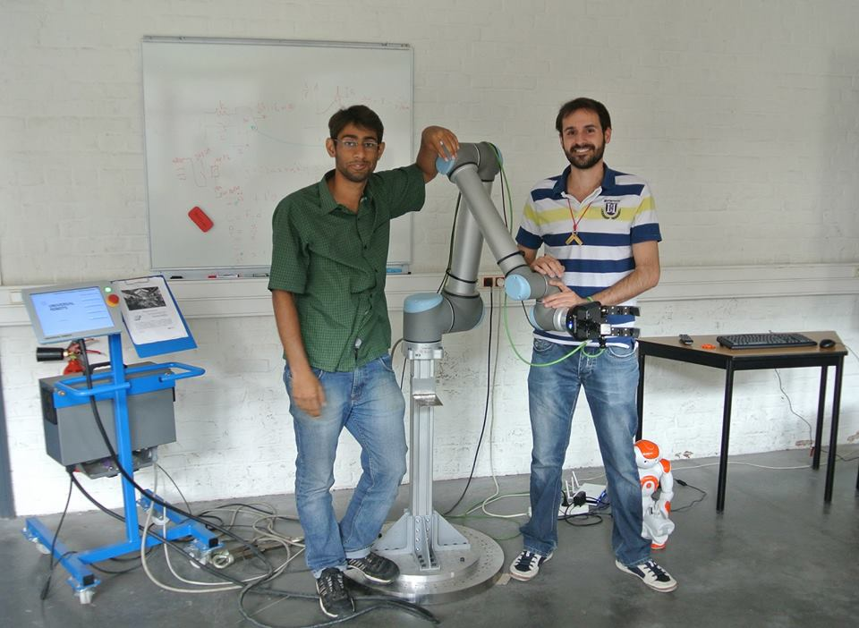
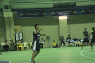

Me
 Hi, I am Product Engineer at Sprinklr! I work on integration of Social Media Advertising and Tracking channels (LinkedInAds) into the core Sprinklr platform.
I graduated from the Indian Institute of Technology Kanpur, one of the top three Engineering colleges in India, in June 2015. I majored in Computer Science and Enginering and my BTech Project was in Motion Planning.
My main interests are Machine Learning and its various applications. I am very interested in Robotics and Robot learning. Computer Vision with its research in Object and Video Recognition using Deep Neural Nets. I also worked on deep learning for Handwritten script recognition using RNNs.
Apart from Academia and professional acivities, I am an avid sportsperson. I played Basketball as a member of the IIT Kanpur College team and am a Marathon Runner. 
Projects
You can find my projects and work experience in my CV. My major research projects are in Robot Learning, Motion Planning, Indic Word Wise Script Recognition, and Action Recognition. More details here
Published Work
My work on Indic Word Wise Script Recognition is under review. You can check it out here
CV
My detailed CV can be dowloaded here